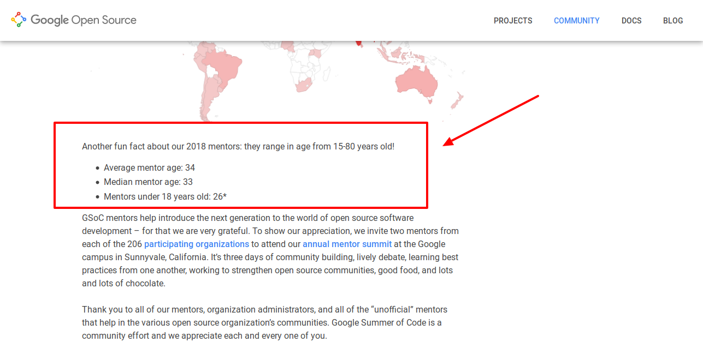
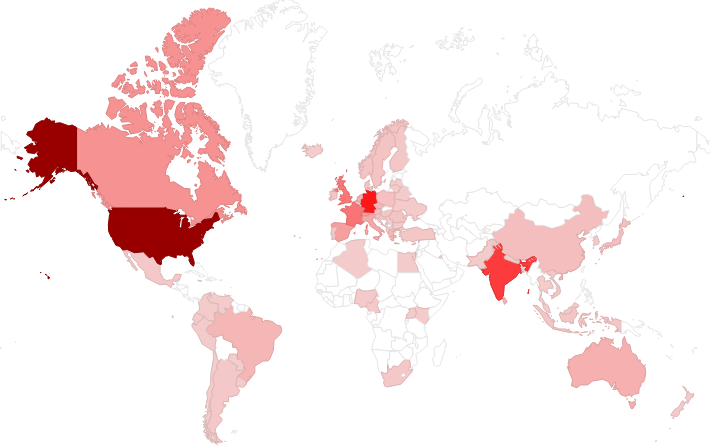
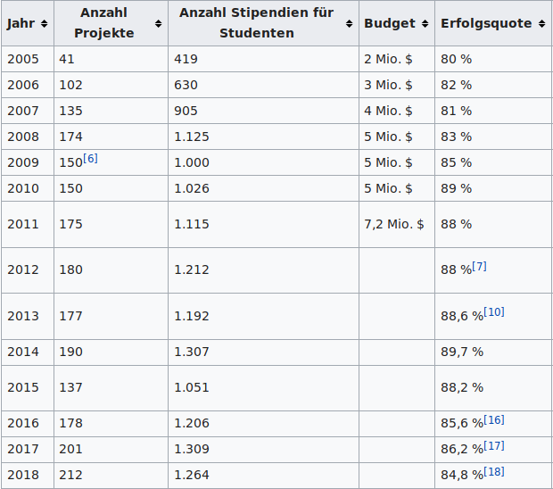
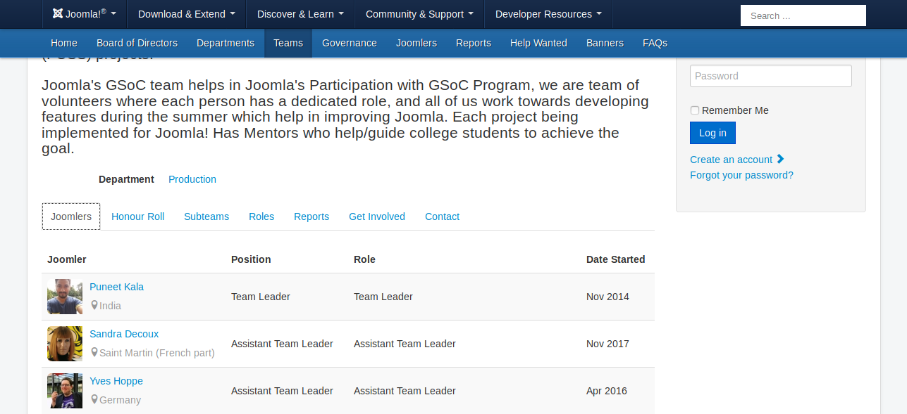
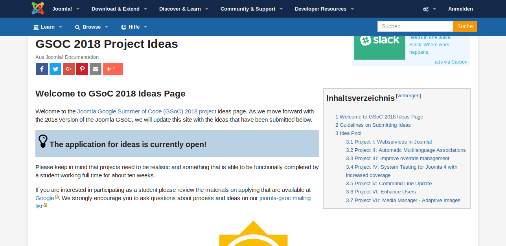
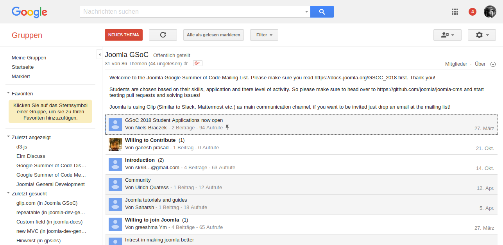
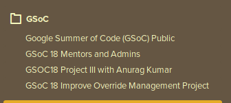
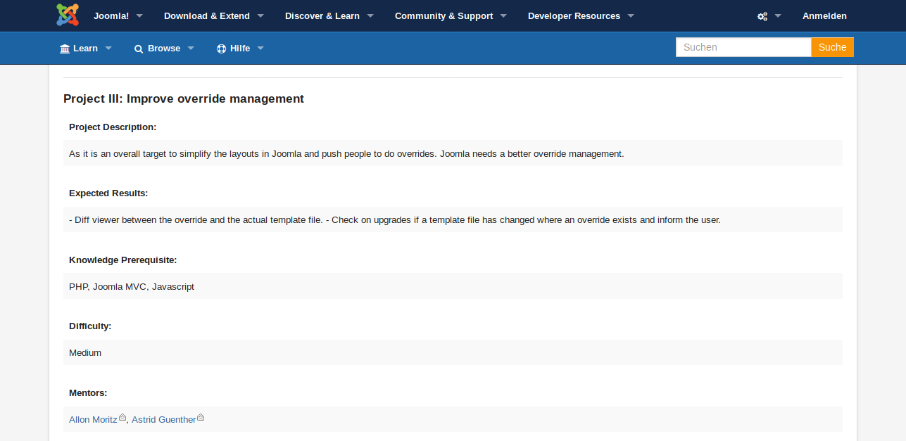
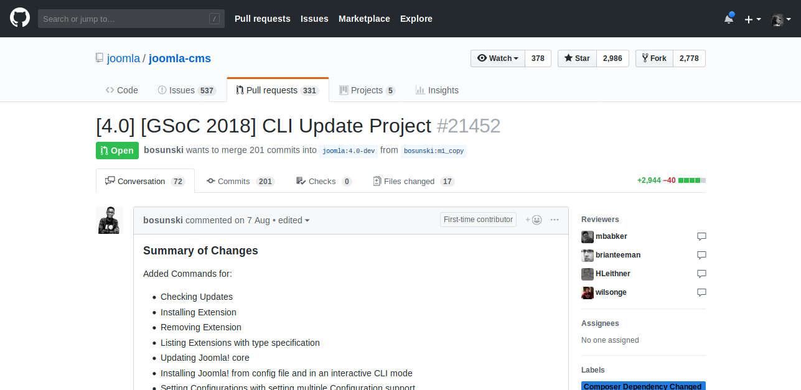
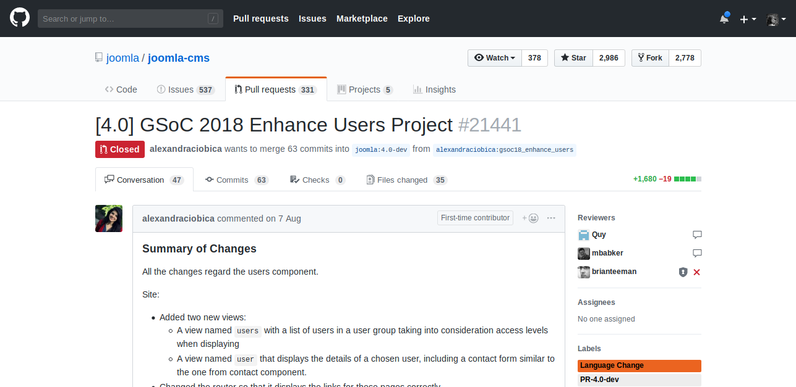

Was ist GSoC?
Ziele
Teilnehmerrollen
Funfact
https://opensource.googleblog.com
12 % Frauen
Karte - Verteilung GSoC - Studenten 2018
https://opensource.googleblog.com
Programmablauf
Ziel: Student bleibt im Projekt.
Größenordnung
https://de.wikipedia.org/wiki/Google_Summer_of_Code
Joomla Google Summer of Code (GSoC) Team.
https://volunteers.joomla.org/teams/google-summer-of-code-joomla-team
Projekte und Ideen
https://docs.joomla.org/GSOC_2018_Project_Ideas
Joomla GSoC Projekte 2018
Joomla Google Summer of Code (GSoC) Mailing Liste
https://groups.google.com/forum/?hl=en#!forum/jgsoc
Joomla Google Summer of Code (GSoC) Zusammenarbeit
https://app.glip.com/
Ein Projektvorschlag
https://docs.joomla.org/GSOC_2018_Project_Ideas
Ziel war:
Demo
https://www.youtube.com/watch?v=l0_jFjswObI
PR
https://github.com/joomla/joomla-cms/pull/21851
CLI Update Project
https://github.com/joomla/joomla-cms/pull/21452
Enhance Users Project
https://github.com/joomla/joomla-cms/pull/21441
Unsere Konstellation:
Was kannst du tun?